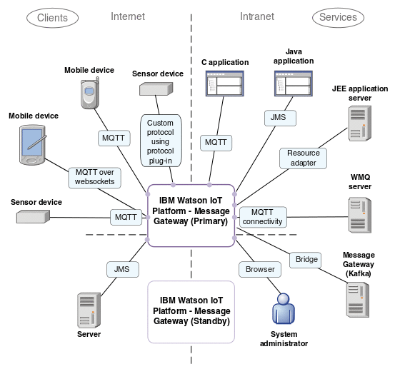

Architecture Overview
An overview of components and connections within an Eclipse Amlen solution.
Figure 1 is a deployment diagram that is typical of Eclipse Amlen applications. In the diagram, Eclipse Amlen connects many users and devices on the internet to services that are deployed on an intranet. The users, devices, and services interact with each other by exchanging messages through Eclipse Amlen.

Eclipse Amlen connects large numbers of clients and routes large volumes of messages. Eclipse Amlen supports both publish/subscribe and point-to-point messaging. Like IBM® MQ, it is a subject-based publish subscribe broker, not a content-based broker. Unlike a content-based broker, message-content is not queried or altered by Eclipse Amlen. No user-based applications can run on Eclipse Amlen. Eclipse Amlen typically sits alongside other edge-of-network devices with the same objectives of forwarding large volumes of internet traffic from many different clients.
Connectivity
Connect clients to Eclipse Amlen by using MQTT, or JMS protocols, which are natively supported.
Connect clients to Eclipse Amlen over a custom protocol by using the protocol plug-in. For more information about installing your own protocol, see Supported protocols.
Connect Eclipse Amlen to a IBM MQ network by using MQ Connectivity. For more information about MQ Connectivity, see MQ Connectivity.
Connect Eclipse Amlen to a Java™ Platform, Enterprise Edition application server by using Eclipse Amlen resource adapter. Connecting in this way allows application server-based JMS messaging, such as asynchronous message driven beans, to be used with Eclipse Amlen. For more information, see Eclipse Amlen resource adapter.
Connect your standby Eclipse Amlen server to your primary Eclipse Amlen server to set up a high availability (HA) pair. For more information, see High availability.